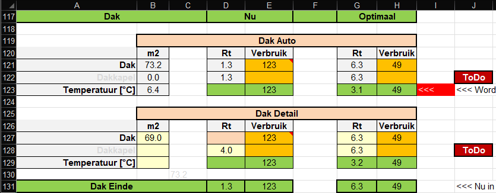

Ook hier weer 2 blokken (aangeduid door de roze cellen), waarvan de bovenste blok (ingevuld door de vragen op de basis pagina) gebruikt als u niets veranderd.
Zodra de roze cel wordt ingevuld, wordt het tweede blok gebruikt voor de berekening.
Op dat moment kunnen oppervlakten en R-waarden worden aangepast.
In geval van zoldervloer isolatie, kun op het tabblad Details cell C42 aanpassen.
U ziet ook nog work in progress, dakkapellen moeten nog in de berekening worden ondergebracht. In de praktijk valt de invloed van een dakkapel vaak mee, want een dakkapel is meestal later aangebracht, heeft een weliswaar een groter oppervlakte maar ook een betere isolatie waarde, waardoor netto effect nihil is.
De temperatuur is de Zolder temperatuur, maar niet duidelijk is meer wat het nut hiervan was.
